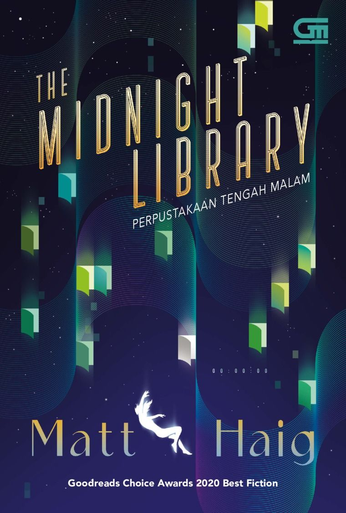
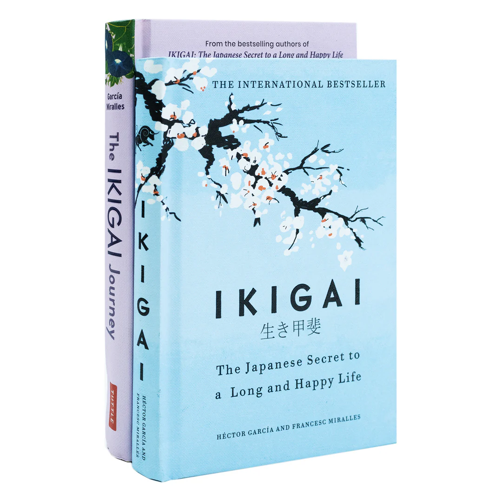

Rp 95.000
Novel inspiratif karya Ahmad Fuadi tentang perjuangan, persahabatan, dan mimpi seorang santri bernama Alif di Pondok Madani. Mengajarkan makna kesungguhan, disiplin, dan keyakinan bahwa mimpi bisa diraih.

Rp 100.000
Novel reflektif tentang pilihan hidup, penyesalan, dan kemungkinan lain yang bisa terjadi, mengajak pembaca melihat hidup dari sudut pandang yang lebih luas dan penuh harapan.

Rp 65.000
Buku yang membahas filosofi hidup Jepang tentang menemukan makna, keseimbangan, dan kebahagiaan melalui hal-hal sederhana dalam kehidupan sehari-hari.

Rp 90.000
Novel keluarga yang menyentuh tentang cinta dan nasihat seorang ayah yang terus hidup untuk anak-anaknya.